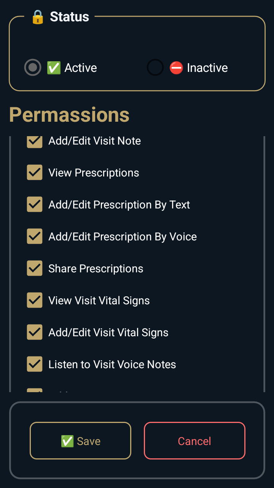

شرح المزايا
صلاحيات الفريق في ملفات المرضى والزيارات
قد يشارك فريق العيادة في أجزاء مختلفة من يوم العمل. يعرض ميديكال سبيس مجموعات صلاحيات مستقلة، ليتمكن صاحب الحساب من مراجعة وصول كل عضو وفق المهام التي يحتاج إلى تنفيذها.
حمّل التطبيق من Google Play تكبير الصورة
تكبير الصورةصلاحيات ملفات المرضى
حدد المهمة قبل منح الوصول
ابدأ بمسؤوليات العضو. تفرّق الإعدادات المصورة بين ملفات المرضى والزيارات والتوثيق السريري والأدوات المرتبطة بالوصفات. وتشمل إجراءات ملفات المرضى العرض والإضافة والتعديل والحذف. راجع الإجراء المحدد بدل الاعتماد على اسم الدور وحده.
أعد المراجعة عند تغيّر المسؤوليات
تغطي مجموعات أخرى الزيارات والشكوى والتشخيص وخطط العلاج والملاحظات والوصفات. تأكد من العضو المقصود والصلاحيات المطلوبة قبل حفظ التغيير. راجع الوصول مجددًا عند تغيّر المهام أو انتهاء الحاجة إليه. تساعد الإعدادات في تنظيم العمل، لكنها لا تستبدل الإشراف المهني أو إجراءات سرية البيانات داخل العيادة.
خطوات الاستخدام
- حدد العضو والمهام التي يحتاج إلى تنفيذها.
- راجع مجموعات الصلاحيات المرتبطة بالمهام وكل إجراء مسموح.
- تحقق من الاختيارات قبل الحفظ، وأعد مراجعة الوصول عند تغيّر المسؤوليات.
من داخل التطبيق
لقطات أصلية من التطبيق. سجلات المرضى والحوار السريري أمثلة افتراضية، واستُبعدت بيانات الاتصال الخاصة.
تكبير الصورةصلاحيات ملفات المرضى
 تكبير الصورة
تكبير الصورةصلاحيات الزيارات
 تكبير الصورة
تكبير الصورةصلاحيات التوثيق السريري


تكبير الصورةصلاحيات الوصفات والأدوات السريرية
أسئلة عن الميزة
هل تعتمد الصلاحيات على اسم الدور فقط؟
تعرض الواجهة مجموعات وإجراءات أكثر تفصيلًا لمراجعة الوصول إلى كل مسار عمل.
ما المجالات المعروضة؟
ملفات المرضى والزيارات والتوثيق السريري والوصفات والأدوات السريرية المرتبطة بها.
هل يظهر رقم هاتف العضو في الصور؟
لا. استُبعد الجزء الذي يحتوي بيانات الاتصال الخاصة من اللقطات المنشورة. اسم العضو في المثال هو Hassan Mohamed.